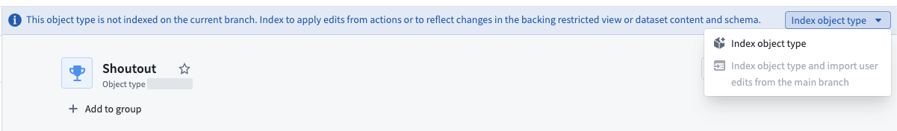
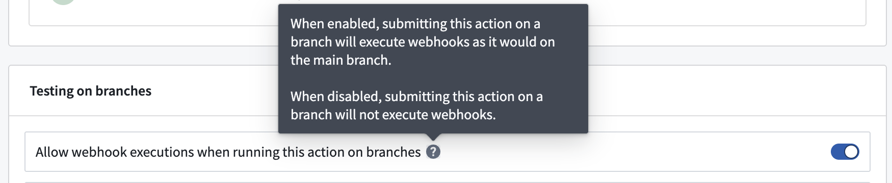
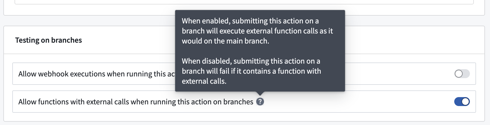
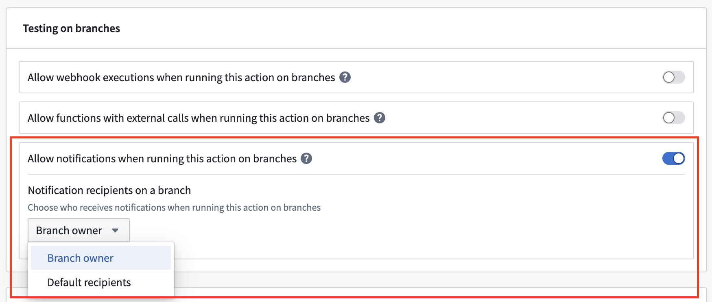

Ontology actions integrate with Global Branching, enabling you to test action types on a branch without affecting your production environment. You can run actions, validate their configurations, and observe edits in an isolated branch context before merging changes to main. Edits from the branch will not be merged.
For general information on Global Branching concepts and workflows, refer to the Global Branching documentation.
You can test actions in a Workshop module on a branch to validate that they have been configured correctly. When all relevant object types are indexed on a branch, you can run the action type and see the resulting edits on the branch.
To run an action on a branch, all object types that are edited by the action type must be indexed on that branch. You can index object types through the individual object type page or through the action type page in Ontology Manager.
When you edit an action type in Ontology Manager, a warning appears if the action type modifies object types that are not indexed on the branch.

If you run the action before these object types are indexed, the action does not apply its edits. A toast notification explains that the action is valid, but that one or more of the object types it edits is read-only on the branch. The notification links to Ontology Manager, where you can index the remaining object types before you run the action again.
:::callout{theme="neutral"}
Running actions on a branch is intended as a testing mechanism. Action edits on a branch will not be merged back into main.
:::
Function-backed actions on a branch behave differently depending on whether they are branch-aware. Branch-aware functions can be modified on the branch and read schemas from it, while non-branch-aware functions only read schemas from main. Regardless of branch-awareness, all function-backed actions execute only on the branch and do not write changes back to main. See supported function types in the Global Branching documentation.
:::callout{theme="neutral"} The following information applies specifically to webhooks, functions with external calls, and notifications that are applied via actions on branches. Side effects applied through other means will behave as defined by those consumers. :::
By default, webhooks do not execute when an action is applied on a branch. This behavior is to prevent accidentally writing to external systems while in a testing environment.
In such cases, you will see a toast notification indicating this behavior.
However, there are some cases where testing a webhook on a branch is desirable, for instance when hitting a READ endpoint.
To override the default behavior, configure the action type's Security and submission criteria tab in Ontology Manager to enable webhook executions on branches.

:::callout{theme="neutral"}
If webhooks on branches are enabled, the webhook will run exactly as it would on main. Consequently, if the webhook is configured to hit an external production environment, it will continue to do that even if the action is executed on a branch.
:::
By default, function-backed action logic with external calls does not execute when an action is applied on a branch; the action fails entirely. This behavior is to prevent accidentally writing to external systems while in a testing environment.
In such cases, you will see a toast notification indicating failure, with an explanation of the behavior.
However, testing on branches is sometimes necessary, for example, when calling READ endpoints. You can override this restriction by enabling functions with external calls on branches in the action type's Security and submission criteria tab in Ontology Manager.

:::callout{theme="neutral"}
If functions with external calls on branches are enabled, the function will make the same external calls as it would on main. Consequently, if the function is configured to hit an external production environment, it will continue to do that even if the action is executed on a branch.
:::
By default, notifications do not execute when an action is applied on a branch. This behavior is to prevent accidentally notifying recipients while in a testing environment.
In such cases, you will see a toast notification indicating this behavior.
However, there are some cases where testing notifications on a branch is desirable.
To override the default behavior, you can enable notifications on branches in the action type's Security and submission criteria tab in Ontology Manager.
Additionally, you can specify the notification recipients when the action runs on a branch:

main.